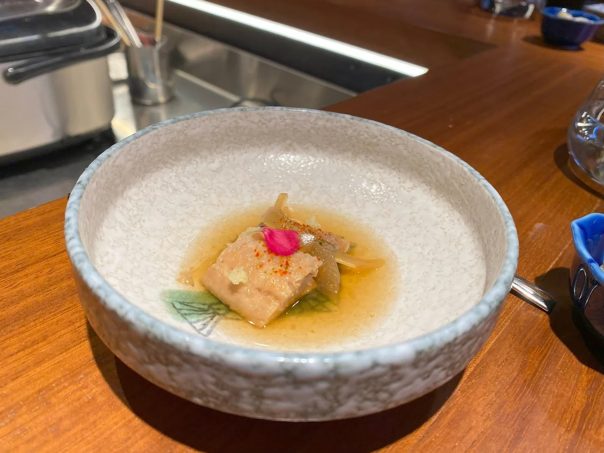
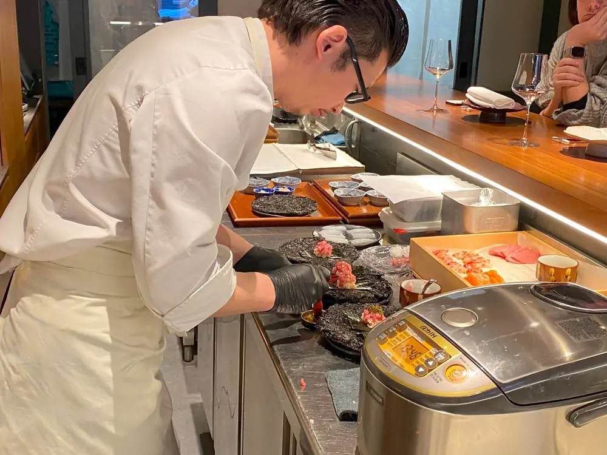
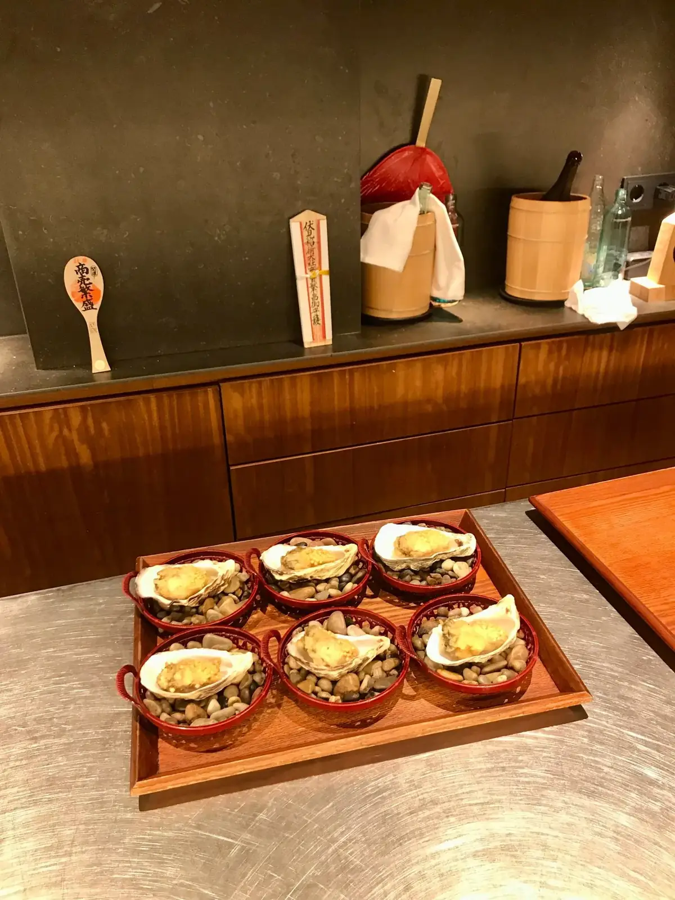
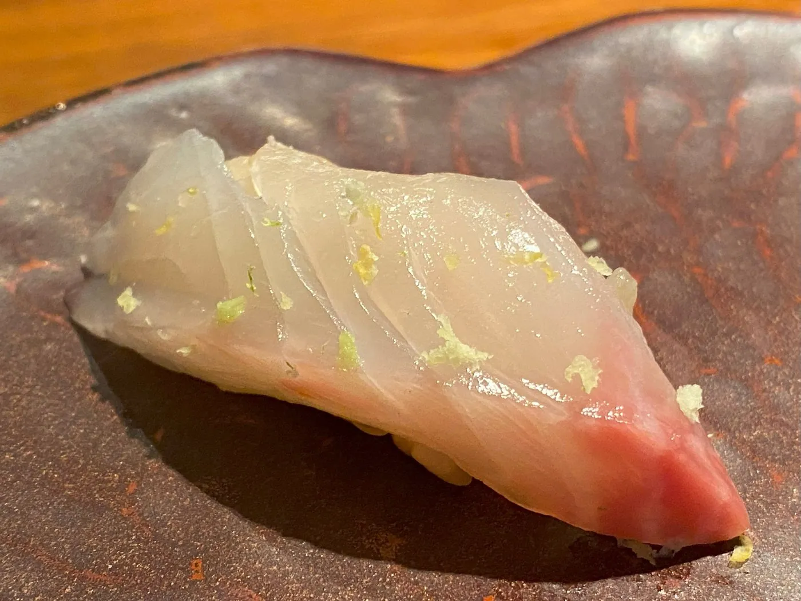
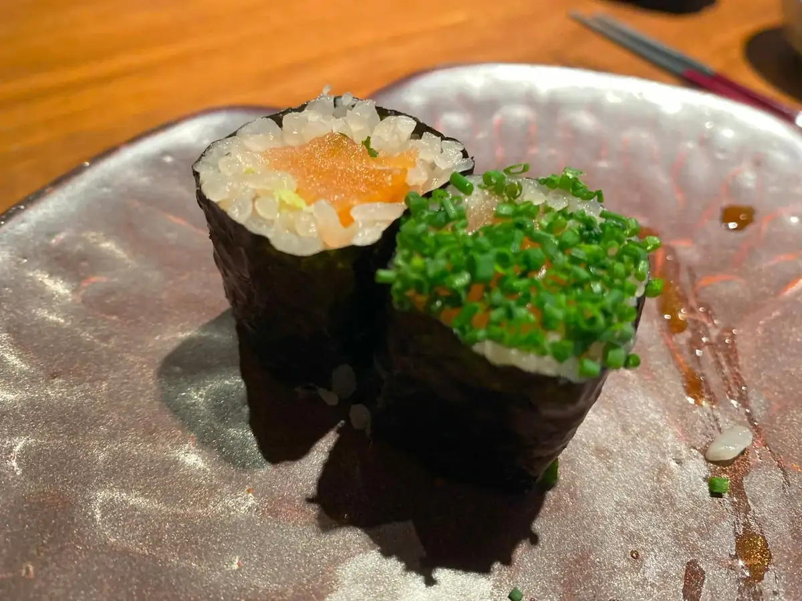
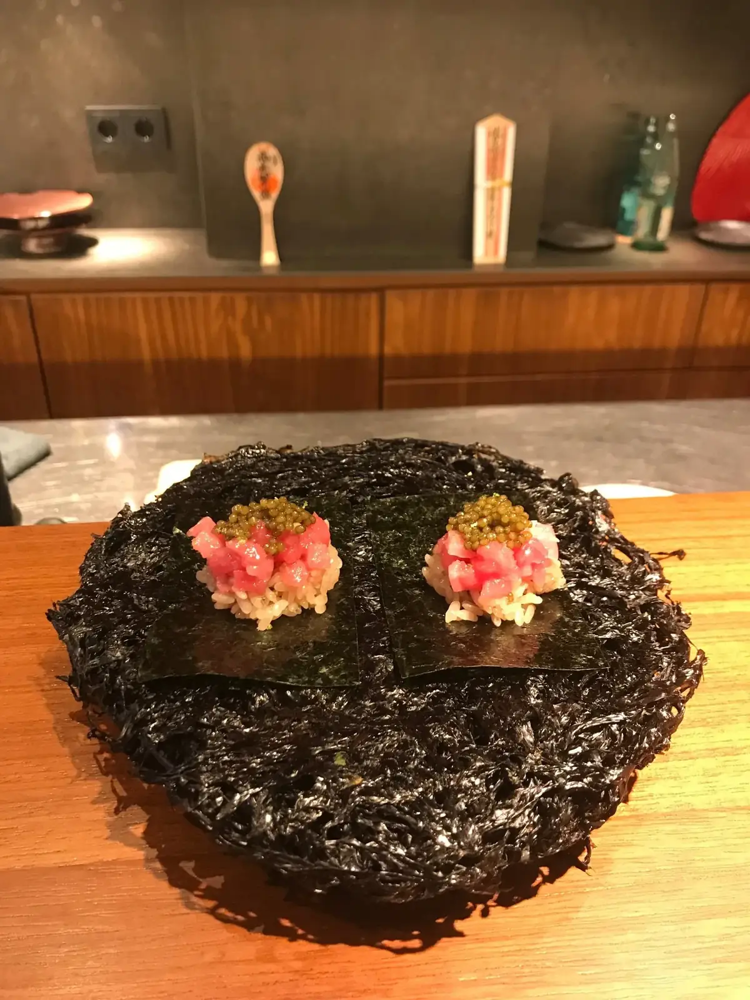
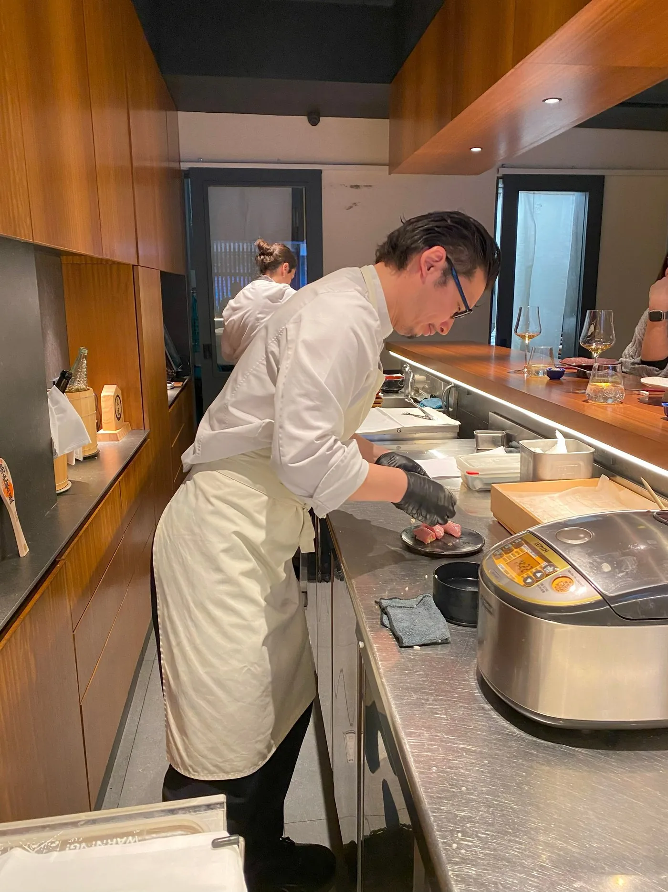

Pase I · ha
Costilla en caldo
Costilla de cerdo ibérico cocida doce horas en caldo dashi de bonito, con pétalo de flor de cerezo curada.
Suto es un izakaya gastronómico en Sants. El chef Yoshikazu Suto, formado en Azurmendi, Quique Dacosta, Enigma y Disfrutar, cocina un omakase único delante de seis comensales por turno. El menú cambia cada estación según el pescado que encuentra esa mañana en el mercado central.

旬
"Que el plato hable del momento, no del cocinero. Si el salmonete está perfecto hoy, no tiene sentido cocinarlo mañana."
— Yoshikazu Suto · chef y propietario
Una cena en Suto dura entre dos y dos horas y media. No es un menú de varios servicios independientes: es una secuencia diseñada, donde cada pase prepara el siguiente. Tienes que llegar puntual: empezamos los seis a la vez.
Os recibimos en la barra. Té frío de cebada (mugi-cha) y un vasito de agua del manantial. El chef saluda en silencio, encadena la primera pieza. No hay cubiertos. Palillos, dedos, cerámica. Os contamos qué pescado hemos escogido hoy en pizarra antes de empezar.
Cocina caliente al fuego de carbón binchotan: ostras gratinadas, daikon ablandado en dashi, foie de pato curado, costillas de cerdo de la dehesa cocidas durante doce horas, encurtidos. Salseado al momento. Entre pase y pase, el chef explica el origen del producto en castellano y japonés.
De siete a nueve piezas de sashimi y nigiri. Atún de Cádiz, lubina del Cantábrico, pez blanco de Palamós, salmón de Noruega, anguila a la brasa. Arroz Koshihikari al vinagre de la casa, soja artesana de Aichi, wasabi rallado al momento. Cada pieza dura una hora de preparación previa, dos segundos en la boca.
Un cuenco final de sopa de miso casero con almeja chirla. Bol pequeño de arroz cocido en olla de hierro fundido con encurtidos suaves. Postre simple: helado de matcha o crema dulce de azuki con galleta de soba. Café o té frío servido como sello. Se acaba el menú en silencio.
Estos son algunos pases representativos del menú actual. Recordatorio: el menú cambia cada estación. Lo que ves no es lo que vas a comer la noche de tu reserva: es la línea de trabajo del chef.

Costilla de cerdo ibérico cocida doce horas en caldo dashi de bonito, con pétalo de flor de cerezo curada.

Ostras del Delta del Ebro gratinadas con mantequilla de miso blanco al carbón binchotan. Servidas sobre piedras del mar.

Lomo de salmonete de Palamós, ralladura de yuzu, arroz Koshihikari templado, gota de soja madurada cinco años.

Norimaki de salmón con huevas de salmón curadas en sake. Y norimaki de toro picado con cebollino y caviar.

Otoro de atún rojo picado a mano, sobre alga nori frita al momento, con tobiko (huevas de pez volador).

El chef Yoshikazu Suto y su segundo de cocina trabajan delante de los comensales durante toda la cena.
Nacido en Tochigi, en el norte de Tokio, Yoshikazu Suto se formó en cocina kaiseki en Kioto durante seis años antes de mudarse a Europa. Trabajó con Eneko Atxa en Azurmendi, con Quique Dacosta en Denia, y como sous-chef en Enigma y en Disfrutar antes de abrir Suto en 2021.
Suto es la traducción contemporánea de un izakaya tradicional: comida japonesa pensada para acompañar bebida, en un espacio íntimo, con producto del mercado local. Aplica su técnica japonesa a producto del Mediterráneo: "hago cocina japonesa con lo que el Mediterráneo me da hoy".
En 2024 recibió su primera estrella Michelin y la mantuvo en 2025. Un Sol Repsol en ambos años. Es uno de los proyectos de autor más singulares de la ciudad: una barra de seis plazas, sin réplica, sin franquicia, sin compromiso con la escalabilidad.
Suto trabaja con turnos cerrados y aforo de seis. Esto significa que la reserva no es flexible: tiene que estar coordinada al detalle. Aquí van los puntos clave para no llevarte sorpresa.
Solo hay un omakase, decidido por el chef esa mañana. No se puede elegir platos individuales, no hay carta a la vista, no hay sustituciones. Avisa de alergias o intolerancias al reservar con al menos 48 horas.
Tres turnos: 13:45 (sólo miércoles y viernes), 20:45, y 22:00 (viernes y sábado). Los seis comienzan a la vez. Si llegáis tarde más de 15 minutos perdéis la reserva y la prepaga.
Carta breve de vinos (50 € botella) seleccionada por el chef. Sake artesano por copa (12-22 €). Maridaje opcional de cuatro copas (65 €). No es obligatorio: puedes pedir agua o un té frío y comer igual.
Las dudas que más recibimos por teléfono e Instagram. Si tienes una alergia seria o una necesidad de dieta concreta, contacta antes de reservar para confirmar que podemos adaptarnos.
A diez minutos a pie de la estación de Sants. Calle tranquila, fachada discreta, sin ostentación. Llama al timbre marcado "Suto" para acceder al local.
Esto era una demo
Esta web era una muestra de lo que podríamos hacer para Undeas. Si te ha gustado y quieres una para tu negocio, escríbenos — Pedro te responde personalmente y la web final la adaptamos al 100% a tu gusto.
Pedro Núñez · Impacto Digital